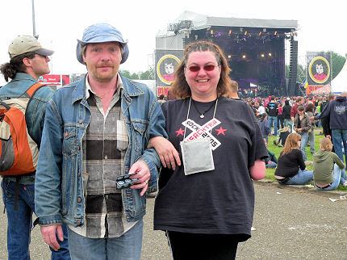
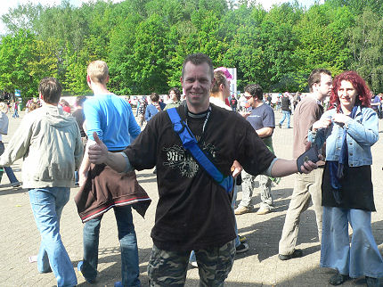

|
Verzamelen bij het PLS om de crew-shirts, armbandjes en parkeerstickers
in ontvangst te nemen.
Parkeren bij Snowworld en afdalen naar Mega-land.
De eerste Rodasupporters zitten al aan de koffie.
Rainier Zinzen, Alfabier- en Roda-supporter neemt ook genoegen met Brand
bier.
Mark Stevelmans uit Z16 is uitermate correct gekleed.

Popeye Theo en Verena aan het ontbijt. In het midden een dooie, of.......
Jaaaaa, er lebt noch, er lebt noch, er lebt noch.
Kevin H. staat met zijn Rodagirl onvindbaar tussen het publiek dat naar de
zonnige klanken van Nelly Furtado luistert.

Jacqueline V. onder meer bekend van Rodakeepers, Rock Werchter en
natuurlijk Pinkpop.
Op Pinkpop draag je uiteraard een roze slip.
Z16-er op weg naar het optreden van Placebo met zojuist gescoord bier.
Deze Rodaman uit Nieuwenhagen bakt eieren voor de camping-gasten.
Rodasupporter Ivo L. uit Heerlen met zijn vriendin.
De Brui va Vols op de camping.
Een paar meter verderop hangt een vlag met Casuals Kerkrade. Wie zal
daar zitten....?

Het is Ramonski met vriendin en een heel fout biertje: Schultensau.....
De heer Dorre aan het camping-ontbijt.
Deze Rodasupporter blijkt een eigen stand te hebben op Pinkpop.
Marco en Dannielle, ook al uit Z16, vonden het Pinkpopprogramma van dit
jaar wèl de moeite waard. Kan ook niet anders met zoveel Britpop.
Schaesberg Maurice als eerste vertegenwoordiger van de SBC.
SBC Roland kwam even later opdagen, met zoontje.
Zo kan het ook...
Pop-guru IndieEddy, nog altijd "at your
service'.
Stafke en Ray vertegenwoordigen de Hanebretboys. Morgen komt Tolk
daarbij. Stoere kistjes en militante broeken maar de kenner ontwaart
meteen de mooie polo-shirts.
Bjorn H. de man die sneller fotografeert dan zijn schaduw staat nu zelf op
de digitale plaat.
Bloodhound Gang denkt dat ze op Plaspop staan (foto: B.A.M.).
OMG
Op verzoek van deze Z16'ers is het crew-shirt aangepast aan de kleur van
de koempel-cap.
Tool sloot dag twee af met een indrukwekkend optreden.
Tim en Patrick.
Hij wilde niet alweer op de foto, maar ontkwam er niet aan.
Twee juffrouwen die (nog) geen Roda-supporter zijn.
Het zoontje van SBC Roland werd geïnterviewd voor TV.
Rodafans uit Simpelveld (foto: Wim Kicken).
Bube als "beersjleper" tijdens het saaie geneuzel van Blöf.

Zo ziet Marcel Michiels er zonder maatpak uit. Peggy kennen we natuurlijk
al langer casual style.
Met zonnebril en petje is deze Rodafan nauwelijks te herkennen; Diana.

Pascal toch nog gevonden tussen de ruim 60.000 bezoekers.
Roger P. maakte deze foto van Michel C. die zich vastklampt aan een
bekert Brand bier.
Franz Ferdinand uit Glasgow, een van de leukere optredens op Pinkpop.
Zonder kaartje "genieten" van Pinkpop? Beklim de ski-berg (+239.2m ANP).
De Red Hot Chili Peppers sloten het festival af als grootste publiekstrekker.
Een iets duidelijkere foto by kind courtesy of B.A.M.
Hopelijk tot ziens bij "Rodafans op Pinkpop 2007".
© Koempels Pleasure Dome
|